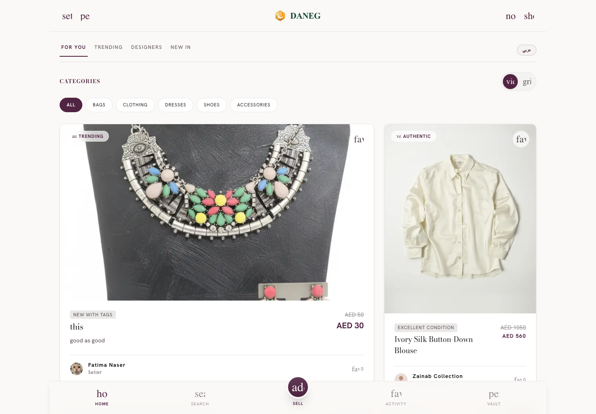
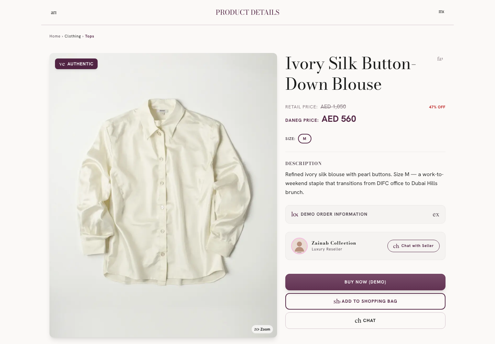
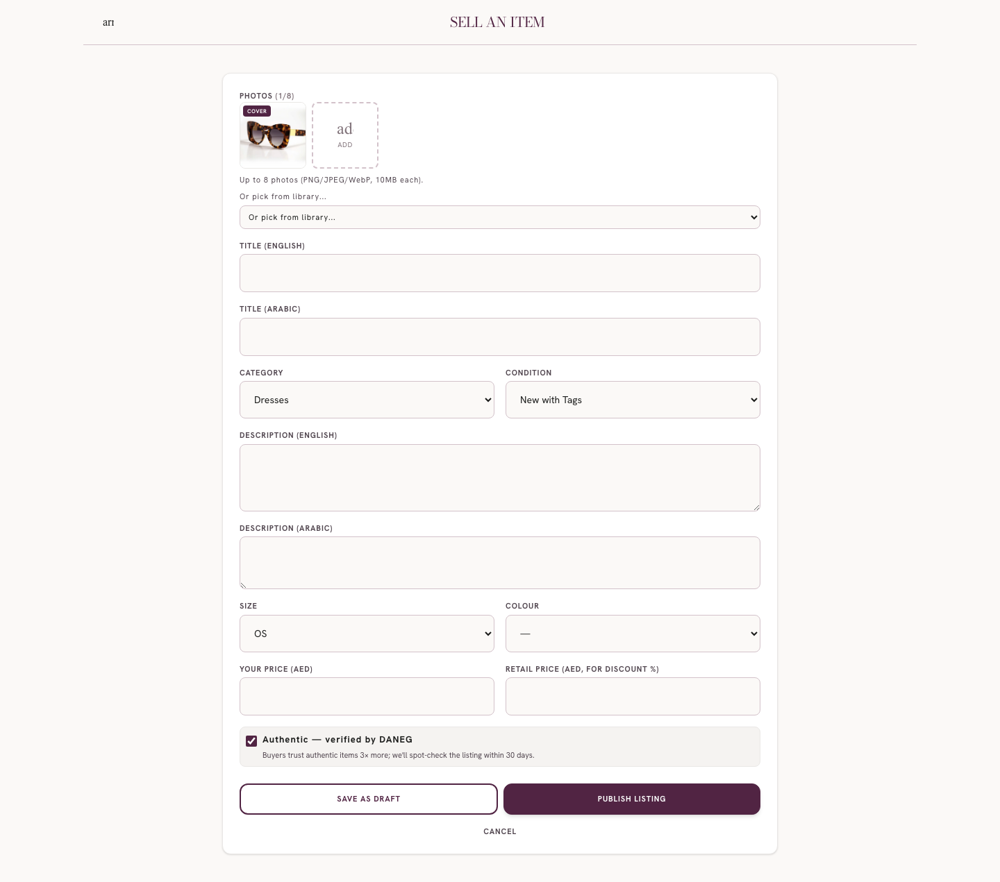
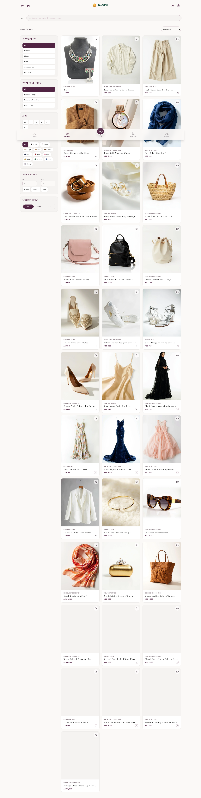
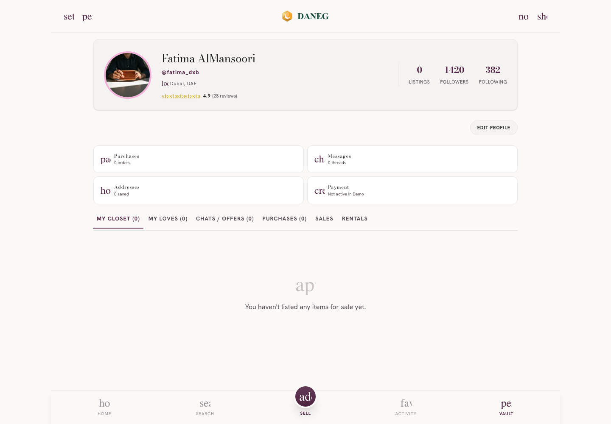
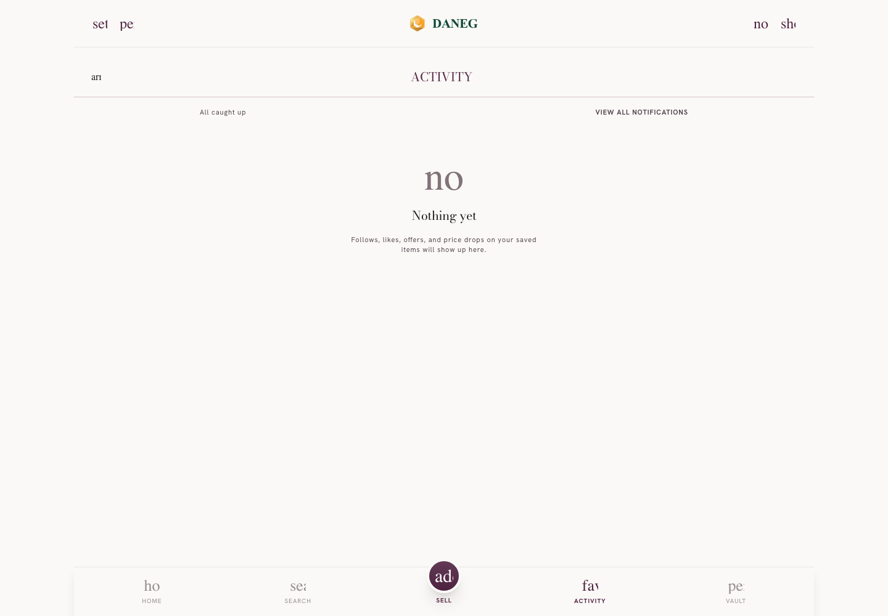
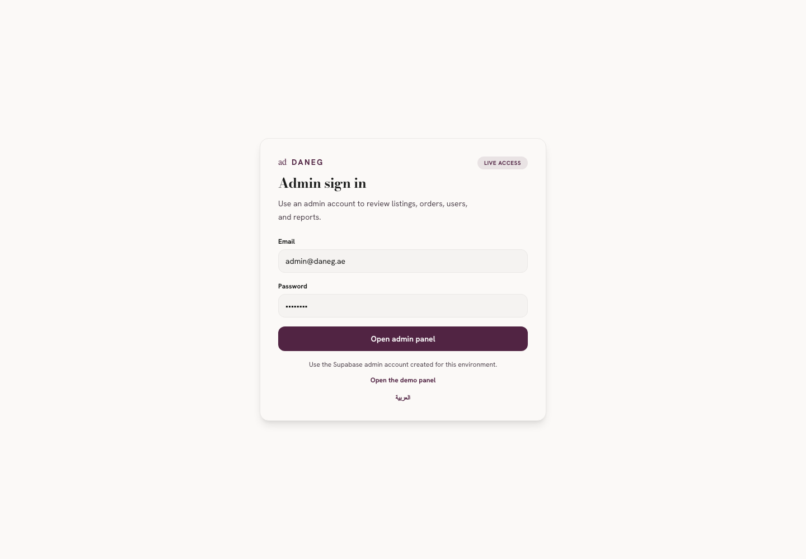
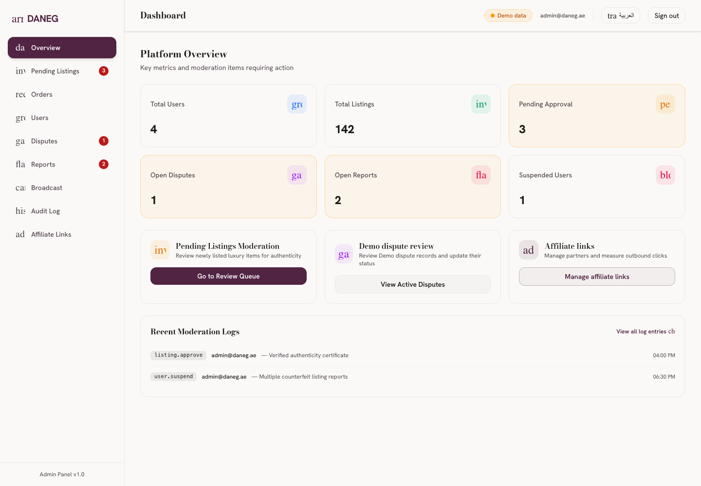

معرفی پروژه
این بخش، پروژه دانگ را از زاویههای مختلف معرفی میکند: هویت برند، مأموریت، مخاطب هدف، وضعیت فعلی و جایگاه محصول در بازار.
۱.۱ هویت برند
دانگ (DANEG) یک بازار آنلاین تخصصی برای مد لوکس دستدوم است که توسط شرکت DANEG FZ-LLC، یک شرکت ثبتشده در امارات متحده عربی، اداره میشود. این برند با شعار «Pre-loved Luxury. Authenticated.» به بازار عرضه میشود و بر دو ارزش اصلی تأکید دارد: اصالت و ارزشمندی کالاهای دستدوم.
نام برند در سه زبان به شکل زیر استفاده میشود:
| زبان | نام | محل استفاده |
|---|---|---|
| انگلیسی | DANEG | زبان پیشفرض رابط کاربری، متا دیتا، لینکها، اعلانهای سیستمی. |
| فارسی (در این سند) | دانگ | متنهای راهنما، مکاتبات با کارفرما، ترجمههای آزاد. |
| عربی | دانق | رابط کاربری عربی، صفحات حقوقی، ایمیلهای رسمی به کاربران عربزبان. |
۱.۲ مأموریت و چشمانداز
دانگ با هدف ایجاد یک بازار امن و قابل اعتماد برای خرید و فروش مد لوکس دستدوم در منطقه خاورمیانه ساخته شده است. سه ضلع اصلی این بازار عبارتند از:
- کشف کالا — کاربران بتوانند بهراحتی قطعات مورد نظرشان را در میان هزاران آگهی پیدا کنند.
- اعتماد به فروشنده — هر خریدار بتواند پیش از خرید، از اصالت و کیفیت کالا و اعتبار فروشنده مطمئن شود.
- گفتوگوی مستقیم — ارتباط بیواسطه میان خریدار و فروشنده برای مذاکره و هماهنگی.
۱.۳ مخاطب هدف
دانگ بهطور خاص برای زنان ساکن امارات متحده عربی طراحی شده است. این انتخاب بر اساس تحلیل بازار منطقهای و الگوهای رفتاری کاربران هدف بوده است:
گروه اصلی کاربران که به دنبال قطعات خاص و با اصالت برای موقعیتهای مختلف هستند.
زنانی که کمد لباس خود را بهطور دورهای بهروزرسانی میکنند و قطعات قدیمی را میفروشند.
افرادی که به پایداری محیطزیستی و مد مسئولانه اهمیت میدهند.
کاربرانی که به دنبال قطعات برند با قیمت مناسبتر از قیمت خردهفروشی هستند.
۱.۴ وضعیت فعلی پروژه
پروژه دانگ در حال حاضر در نسخه نمایشی عمومی (Public Demo) قرار دارد. این نسخه برای نمایش مسیرهای کاربری، اعتبارسنجی تجربه کاربری و جمعآوری بازخورد طراحی شده است.
۱.۵ ساختار شرکت و تیم
دانگ توسط یک تیم چندوظیفهای توسعه داده میشود که شامل نقشهای زیر است:
- تیم محصول — تعریف نیازمندیها، اولویتبندی ویژگیها، تست کاربری.
- تیم مهندسی فرانتاند — پیادهسازی رابط کاربری با Next.js و React.
- تیم مهندسی بکاند — طراحی API، پایگاه داده، احراز هویت.
- تیم طراحی — طراحی تجربه کاربری، هویت بصری، گرافیک.
- تیم عملیات — مدیریت محتوا، نظارت، پشتیبانی کاربران.
- تیم حقوقی و انطباق — تهیه اسناد حقوقی، رعایت قوانین محلی.
۱.۶ موقعیت رقابتی
در مقایسه با رقبای منطقهای، دانگ سه تمایز اصلی دارد:
| ویژگی | دانگ | پلتفرمهای مشابه |
|---|---|---|
| تمرکز جغرافیایی | منطقه خاورمیانه، بهویژه امارات | عموماً جهانی یا منطقهای دیگر |
| تمرکز محصولی | مد لوکس دستدوم تخصصی | عمومی یا تمرکز بر کالاهای نو |
| احراز اصالت | سطوح رسمی اصالت با نظارت تیم | معمولاً فقط اظهار فروشنده |
اهداف و ارزشهای محصول
این بخش، شش ارزش اصلی محصول را معرفی میکند که تمام تصمیمات طراحی و توسعه بر اساس آنها گرفته میشود.
پروفایل عمومی فروشنده، نشانگرهای اصالت، تاریخچه فعالیت، نرخ پاسخگویی و گفتوگوی مستقیم، فضایی مطمئن برای معامله میسازد.
فیلترهای قابل ترکیب بر اساس دسته، سایز، رنگ، وضعیت و قیمت، رسیدن به کالای دلخواه را سریعتر میکند.
گفتوگوی درونبرنامهای میان خریدار و فروشنده، نیاز به ابزارهای خارجی را حذف میکند.
پنل مدیریت با صف بررسی آگهیها، رسیدگی به گزارشها و اعلان عمومی، سلامت بازار را تضمین میکند.
طراحی ریسپانسیو با نوار دسترسی پایین صفحه، استفاده از اپلیکیشن را در موبایل ساده و سریع کرده است.
پشتیبانی از انگلیسی و عربی برای دسترسی به بازار منطقهای گستردهتر.
۲.۱ ماتریس تصمیمگیری
هنگام توسعه هر ویژگی جدید، تیم محصول این شش ارزش را بهعنوان معیار ارزیابی استفاده میکند:
| ارزش | سؤال کلیدی |
|---|---|
| اعتماد | آیا این ویژگی به کاربر اطمینان بیشتری میدهد؟ |
| شفافیت | آیا اطلاعات بهصورت واضح و قابل فهم ارائه میشوند؟ |
| سادگی | آیا تجربه کاربر روان و بدون اصطکاک است؟ |
| امنیت | آیا اطلاعات شخصی و مالی کاربر محافظت میشود؟ |
| اعتبار | آیا اعتماد میان خریدار و فروشنده تقویت میشود؟ |
| پایداری | آیا این ویژگی ارزش بلندمدت برای کاربر ایجاد میکند؟ |
سیاستهای کلی سایت و حاکمیت بازار
دانگ علاوه بر تجربه کاربری، مجموعهای از سیاستها و فرآیندهای نظارتی دارد که سلامت بازار و اعتماد کاربران را تضمین میکند. این بخش، منطقها و قواعد حاکم بر هر بخش از محصول را توضیح میدهد.
۳.۱ هویت برند و لحن ارتباطی
دانگ با شعار «Pre-loved Luxury. Authenticated.» به بازار عرضه میشود. لحن ارتباطی در سراسر محصول شامل اپلیکیشن، صفحات حقوقی، اعلانها و مکاتبات پشتیبانی، بر یکپارچگی برند و احترام به کاربر تأکید دارد.
واژگان مجاز
برای توصیف کالاها از عبارات «pre-loved» (انگلیسی) یا معادلهای مناسب در زبانهای دیگر استفاده میشود. این واژگان حس مثبت و ارزشمندی کالای دستدوم را منتقل میکنند.
واژگان ممنوع
استفاده از عبارات «second-hand»، «secondhand»، «second hand» در متنهای انگلیسی و معادلهای عربی «مستعمل/مستعملة» در متنهای بازاریابی ممنوع است. این محدودیت توسط تست خودکار copyGuard در فرآیند بیلد اعمال میشود.
۳.۲ سطوح اصالت کالا
هر کالا در دانگ یکی از سه سطح اصالت زیر را دارد که بهصورت نشان رنگی روی کارت کالا و صفحه جزئیات نمایش داده میشود:
Verified by DANEG
کالا توسط تیم دانگ بررسی و اسناد اصالت آن تأیید شده است. خریدار با اطمینان کامل میتواند خرید کند.
In Review
اسناد اصالت توسط فروشنده ارائه شده و در صف بررسی تیم دانگ قرار دارد. کالا پس از تأیید، به سطح Verified منتقل میشود.
Self-declared
فروشنده اصالت کالا را اعلام کرده اما بررسی تیم دانگ هنوز کامل نشده است. خریدار باید با احتیاط بیشتری عمل کند.
قانون برندهای لوکس: آگهی برندهای Chanel, Dior, Hermes, Louis Vuitton, Celine, Gucci, Bottega Veneta, Prada, Loewe و Chloe فقط در سطح Verified قابل انتشار است.
۳.۳ فرآیند بررسی آگهیها
هر آگهی قبل از نمایش عمومی، چرخه بررسی زیر را طی میکند:
۳.۴ قوانین ثبت کالا
الزامی
- عکس اصلی و تکمیلی واقعی از کالای در حال فروش
- عنوان و توضیحات به انگلیسی (و در صورت نیاز عربی)
- انتخاب دسته، وضعیت، سایز و رنگ
- قیمت فروش به درهم (AED) و قیمت اصلی برای نمایش درصد تخفیف
- تأیید اظهار اصالت توسط فروشنده
ممنوع
- تصاویر غیر واقعی، کپی از اینترنت یا عکس برند بهجای کالای واقعی
- کالاهای تقلیدی، دزدی یا غیرقانونی
- کالاهایی که فروش آنها طبق قوانین ممنوع است
- توصیف نادقیق، پنهان کردن عیوب یا عکسهای دستکاریشده
- درج اطلاعات تماس شخصی در شرح کالا
۳.۵ فرآیند گزارشدهی
هر کاربر میتواند یک آگهی یا فروشنده را گزارش دهد. گزارشها با شناسه شفاف (DANEG-XXXXX) به تیم نظارت ارسال میشوند.
| دلیل گزارش | توضیح |
|---|---|
| تقلب یا فیک | کالا اصل نیست یا اسناد جعلی ارائه شده. |
| محتوای نامناسب | عکس یا متن مغایر با قوانین. |
| هرزنامه یا کلاهبرداری | تلاش برای فریب کاربران یا ارسال پیام اسپم. |
| دستهبندی نادرست | کالا در دستهبندی اشتباه ثبت شده. |
| مظنون به سرقت | کالا مشکوک به سرقتی بودن است. |
| سایر | سایر موارد نیازمند بررسی. |
پس از ثبت، گزارش وارد یکی از چهار وضعیت open، investigating، resolved یا dismissed میشود.
۳.۶ حل اختلاف و مرجوعی
در مواردی که خریدار و فروشنده نتوانند از طریق گفتوگو به توافق برسند، خریدار میتواند از صفحه جزئیات سفارش، اختلاف را باز کند:
| دلیل اختلاف | معنا |
|---|---|
| کالا دریافت نشد | پس از مهلت مقرر، بسته به دست خریدار نرسیده. |
| کالای اشتباه ارسال شد | کالای تحویلی با سفارش مغایرت دارد. |
| کالا در حمل آسیب دید | بسته در زمان تحویل آسیب فیزیکی دارد. |
| مطابق توضیحات نبود | کالا با عکس یا شرح فروشنده تفاوت محسوس دارد. |
| مظنون به تقلب | کالا اصل به نظر نمیرسد. |
| سایر | سایر موارد. |
۳.۷ گفتوگوی درونبرنامهای
تمام مکالمات خریدار و فروشنده در داخل پلتفرم انجام میشود تا امنیت، قابلیت پیگیری و حفاظت از اطلاعات کاربران حفظ شود:
- پیامرسانی خارج از پلتفرم برای دور زدن کارمزد یا حفاظت خریدار ممنوع است.
- ارسال اطلاعات تماس شخصی در چت توسط سیستم پایش میشود.
- از داخل گفتوگو میتوان مستقیماً به صفحه کالا یا فرآیند خرید رفت.
- امکان مسدود کردن کاربر از تنظیمات فراهم است.
- پیشنهاد قیمت (Make an Offer) در چت امکان مذاکره را فراهم میکند.
۳.۸ امنیت حساب و قفل اپلیکیشن
رمز عددی (PIN)
رمز ۴ تا ۸ رقمی با الگوریتم PBKDF2-SHA-256 و ۱۲۰ هزار تکرار، همراه با Salt تصادفی هش میشود.
احراز بیومتریک
از طریق WebAuthn و سنسور Touch ID / Face ID / Windows Hello.
زمانبندی قفل خودکار
اپلیکیشن پس از ۱، ۵، ۱۵، ۳۰ یا ۶۰ دقیقه بیاستفاده ماندن قفل میشود.
محدوده تهدید
این لایه، دسترسی فیزیکی تصادفی به گوشی باز را پوشش میدهد.
۳.۹ حریم خصوصی و دادهها
دانگ با قوانین حفاظت از دادههای شخصی امارات (Federal Decree-Law No. 45 of 2021) سازگار است:
دادههای جمعآوریشده
- اطلاعات حساب (نام، ایمیل، تلفن، هش رمز)
- محتوای آگهیها و چت
- دادههای نمایشی (receipts محلی در مرورگر)
- لاگهای فنی (IP، نوع دستگاه، تعاملات)
نگهداری داده
- اطلاعات حساب تا زمان فعال بودن
- سوابق مالی تا ۷ سال (الزام قانونی)
- تصاویر آگهی فقط تا زمان حذف آگهی
حقوق کاربر
- دسترسی، اصلاح و حذف دادهها
- محدودسازی یا اعتراض به پردازش
- دریافت دادهها به فرمت قابل انتقال
- شکایت به دفتر حفاظت داده امارات
اشتراکگذاری
- با سایر کاربران فقط در حد نیاز سفارش
- با ارائهدهندگان زیرساخت
- با مراجع قانونی در صورت الزام
- هرگز فروش دادهها
۳.۱۰ پنل مدیریت و ابزارهای نظارت
تعداد کاربران، آگهیها، آگهیهای در انتظار، اختلافات باز، گزارشهای فعال.
صف آگهیهای در انتظار تأیید.
تعلیق حساب، بازنشانی رمز، تاریخچه فعالیت.
مرور پروندهها و ثبت تصمیم نهایی.
صف گزارشها با اولویتبندی.
تاریخچه اقدامات مدیران.
ارسال پیام همگانی.
مدیریت لینکهای همکاری.
۳.۱۱ صفحات حقوقی
| سند | موضوع |
|---|---|
| Terms of Service | شرایط استفاده، اهلیت، تعهدات، کارمزد، مالکیت محتوا. |
| Privacy Policy | نحوه جمعآوری، استفاده و حفاظت از دادههای شخصی. |
| Returns & Refunds | شرایط بازگشت، رسیدگی به شکایات، محدودیتهای نسخه نمایشی. |
PLACEHOLDER (آدرس دفتر ثبتشده، شماره مجوز تجاری) هستند که پیش از لانچ باید با اطلاعات واقعی شرکت جایگزین شوند.مشخصات فنی سیستم
این بخش، محدودیتها، تاکسونومیها، و وضعیتهای مختلف سیستم را بهعنوان مرجع سریع مستند میکند.
۴.۱ قوانین بارگذاری تصویر
| پارامتر | محدودیت |
|---|---|
| فرمتهای مجاز | JPEG, PNG, WebP |
| حداکثر حجم هر تصویر (listing) | ۱۰ مگابایت |
| حداکثر حجم آواتار | ۲ مگابایت |
| حداکثر طول بزرگترین ضلع (listing) | ۱۶۰۰ پیکسل (تغییر اندازه خودکار) |
| حداکثر طول بزرگترین ضلع (avatar) | ۱۰۲۴ پیکسل (تغییر اندازه خودکار) |
| تعداد تصاویر هر آگهی | بدون محدودیت، پیشنهاد: ۳-۵ تصویر |
| مسیر ذخیرهسازی | {userId}/{listingId}/{uuid}.{ext} |
| سیاستهای RLS | فقط صاحب آگهی دسترسی دارد |
۴.۲ تاکسونومی دستهبندیها
| دسته اصلی (EN) | دسته اصلی (AR) | زیر دستههای ممکن |
|---|---|---|
| Bags | حقائب | Handbags, Clutches, Backpacks, Crossbody, Bucket Bags |
| Shoes | أحذية | Heels, Sneakers, Flats |
| Dresses | فساتين | Maxi & Gowns, Midi, Kaftans & Abayas, Wedding |
| Accessories | إكسسوارات | Watches, Jewellery, Scarves & Hijabs, Sunglasses, Belts |
| Clothing | ملابس | Blazers & Jackets, Tops, Trousers, Knitwear |
زیر دستهها بهصورت خودکار از طریق تابع deriveSubCategory بر اساس کلمات کلیدی موجود در عنوان کالا شناسایی میشوند.
۴.۳ سطوح وضعیت کالا
| وضعیت (EN) | وضعیت (AR) | توضیح |
|---|---|---|
| New with Tags | جديد بالملصقات | کالا کاملاً نو، با برچسب فروشگاه اصلی. |
| Excellent Condition | حالة ممتازة | کالا چندین بار استفاده شده، بدون علامت واضح استفاده. |
| Gently Used | مستعمل خفيف | کالا استفاده شده با علائم ملایم و قابل مشاهده. |
۴.۴ سایزها و رنگها
سایزهای موجود
XS, S, M, L, XL, OS (One Size = مقاس واحد)
رنگهای تعریفشده
۱۲ رنگ استاندارد با نام انگلیسی، نام عربی و کد HEX.
۴.۵ وضعیتهای آگهی (Listing)
| وضعیت | توضیح |
|---|---|
| draft | پیشنویس، فقط برای صاحب آگهی قابل مشاهده |
| active | فعال و در حال نمایش عمومی |
| reserved | رزرو شده برای مشتری خاص |
| sold | فروخته شده، از فید عمومی حذف میشود |
| archived | بایگانی شده توسط صاحب یا مدیر |
۴.۶ وضعیتهای سفارش (Order)
| وضعیت | توضیح |
|---|---|
| processing | سفارش ثبت شده، در انتظار پردازش توسط فروشنده |
| shipped | ارسال شده، کد رهگیری ثبت شده |
| delivered | تحویل به خریدار تأیید شده |
| returned | کالا توسط خریدار مرجوع شده |
| cancelled | سفارش قبل از ارسال لغو شده |
۴.۷ سطوح اصالت (Authenticity Tiers)
| سطح | رنگ نشان | الزامات |
|---|---|---|
| verified | سبز پررنگ | تأیید توسط تیم دانگ + اسناد اصالت |
| in_review | طلایی | اسناد ارائه شده، در صف بررسی |
| self_declared | خاکستری | فقط اظهار فروشنده |
۴.۸ انواع اعلان
| نوع | توضیح |
|---|---|
| chat | پیام جدید در گفتوگو |
| offer | پیشنهاد قیمت جدید |
| follow | دنبالکننده جدید |
| price_drop | کاهش قیمت روی کالای ذخیرهشده |
| like | پسندیدن آگهی شما |
| item_saved | ذخیره شدن آگهی شما |
| order | تغییر وضعیت سفارش |
| system | اعلانهای سیستمی |
معماری فنی
این بخش، ساختار فنی پلتفرم، لایههای مختلف و نحوه ارتباط آنها را توضیح میدهد.
۵.۱ پشته فناوری
Next.js 15 با App Router، React 19، TypeScript.
Tailwind CSS با تم سفارشی، کلاسهای utility-first.
Hanken Grotesk، Bodoni Moda، Noto Sans Arabic، El Messiri.
Supabase (PostgreSQL، Auth، Storage، Realtime).
Service Worker برای حالت آفلاین، manifest.json برای نصب.
React Context API + localStorage.
Vitest برای واحد، Playwright برای E2E.
۵.۲ ساختار پوشهها
| پوشه | محتوا |
|---|---|
src/app/ | صفحات Next.js با App Router |
src/components/ | کامپوننتهای React قابل استفاده مجدد |
src/context/ | React Context برای وضعیت سراسری |
src/data/ | دادههای نمونه (mock) |
src/services/ | لایه سرویسها (backend, admin, mocks) |
src/lib/ | توابع کمکی |
src/hooks/ | React Hooks سفارشی |
public/ | فایلهای استاتیک |
docs/ | مستندات پروژه |
۵.۳ سه فاز توسعه
۵.۴ مدیریت وضعیت
وضعیت سراسری اپلیکیشن در AppContext نگهداری میشود که شامل موارد زیر است:
- کاربر و احراز هویت — اطلاعات حساب، نشست، توکن.
- محصولات — لیست آگهیها، علاقهمندیها، سبد خرید.
- سفارشات — لیست خریدها و فروشها.
- مکاتبات — گفتوگوها، پیامها، اعلانها.
- تنظیمات — زبان، امنیت، ترجیحات.
۵.۵ ساختار مسیریابی
| مسیر | هدف |
|---|---|
/ | صفحه لندینگ بازاریابی |
/app | اپلیکیشن اصلی پس از ورود |
/app?view=... | انواع صفحههای داخلی |
/admin | پنل مدیریت |
/legal/{terms,privacy,refunds} | صفحات حقوقی |
/auth/callback | بازگشت از احراز هویت اجتماعی |
/go/[shortId] | لینکهای کوتاه affiliate |
/preview | محیط پیشنمایش |
/api/stripe/* | API پرداخت |
/api/health | بررسی سلامت سرویس |
صفحه لندینگ و بازاریابی
این بخش، صفحه لندینگ عمومی دانگ را که اولین نقطه تماس کاربران جدید با برند است، توضیح میدهد.
۶.۱ هدف صفحه لندینگ
صفحه لندینگ (/) سه هدف اصلی دارد:
- معرفی برند و ارزش پیشنهادی به کاربران جدید.
- هدایت کاربران به سمت دانلود یا استفاده از اپلیکیشن.
- ارائه اطلاعات لازم برای تصمیمگیری کاربران درباره ثبتنام.
۶.۲ ساختار صفحه
صفحه لندینگ از ۹ بخش اصلی تشکیل شده است:
۶.۳ بهینهسازی SEO
صفحه لندینگ بهصورت Server Component پیادهسازی شده و برای SEO بهینه است:
- تگهای متا بهصورت پویا بر اساس زبان تولید میشوند.
- Open Graph و Twitter Card برای اشتراکگذاری در شبکههای اجتماعی.
- تگهای hreflang برای زبانهای مختلف (
enوar). - structured data (JSON-LD) برای موتورهای جستوجو.
- Lighthouse score بالای ۹۰ در معیارهای Performance و SEO.
۶.۴ PWA و نصب اپلیکیشن
دانگ بهصورت PWA (Progressive Web App) طراحی شده و قابل نصب روی دستگاههای مختلف است:
| دستگاه | روش نصب |
|---|---|
| iOS | از منوی Share گزینه «Add to Home Screen» را انتخاب کنید. |
| Android | بنر نصب خودکار یا از منوی مرورگر گزینه «Install App» را انتخاب کنید. |
| Desktop (Chrome/Edge) | نشانگر نصب در نوار آدرس یا از منوی «Install DANEG». |
پس از نصب، اپلیکیشن بهصورت تمامصفحه اجرا میشود و آفلاین نیز برخی صفحهها را نمایش میدهد.
۶.۵ تغییر زبان
زبان صفحه لندینگ با پارامتر URL ?lang=ar تنظیم میشود:
/— نسخه انگلیسی (پیشفرض)./?lang=ar— نسخه عربی با چیدمان راستبهچپ.- زبان در cookie
daneg_languageذخیره میشود.
احراز هویت و مدیریت حساب
این بخش، تمام مسیرهای مربوط به ثبتنام، ورود، بازیابی رمز عبور و احراز هویت اجتماعی را توضیح میدهد.
۷.۱ ثبتنام
کاربر جدید با چهار فیلد ساده ثبتنام میکند:
| فیلد | اعتبارسنجی |
|---|---|
| نام | حداقل ۲ کاراکتر |
| ایمیل | فرمت استاندارد ایمیل + بررسی یکتا بودن |
| تلفن | فرمت بینالمللی + بررسی یکتا بودن |
| رمز عبور | حداقل ۸ کاراکتر شامل حرف و عدد |
پس از ثبتنام موفق، یک کد OTP به شماره تلفن ارسال میشود.
۷.۲ تأیید OTP
۷.۳ ورود
کاربران موجود میتوانند با ایمیل و رمز عبور وارد شوند. نشست فعال تا ۳۰ روز حفظ میشود.
۷.۴ احراز هویت اجتماعی
ورود با حساب Google یکپارچه شده است. پس از بازگشت از OAuth provider، کاربر به صفحه callback هدایت شده و نشست ایجاد میشود.
۷.۵ بازیابی رمز عبور
۷.۶ مدیریت نشست
نشست کاربر در localStorage مرورگر ذخیره میشود. توکن دسترسی JWT برای تأیید هویت در Server Actions استفاده میشود.
کشف و مرور کالاها
این بخش، صفحه اصلی اپلیکیشن، فید کشف، و الگوریتم شخصیسازی را توضیح میدهد.

۸.۱ چهار جریان محتوایی اصلی
| تب | محتوا |
|---|---|
| For You | پیشنهادهای شخصیسازیشده بر اساس سلیقه و رفتار اخیر کاربر. |
| Trending | کالاهایی که در روزهای اخیر بیشترین توجه کاربران را جلب کردهاند. |
| Designers | مرور کالاها بر اساس فروشنده یا مجموعههای منتخب برندها. |
| New In | تازهترین آگهیهای منتشرشده در بازار برای کشف سریع. |
۸.۲ الگوریتم شخصیسازی
منطق شخصیسازی For You
- برای کاربران جدید، تب For You با کالاهای پرطرفدار عمومی پر میشود.
- پس از ثبت ۵ تعامل (لایک، ذخیره، بازدید)، الگوریتم شروع به شخصیسازی میکند.
- وزندهی بر اساس: دسته دلخواه + سایز معمول + بازه قیمتی + تعاملات اخیر.
- آگهیهای در حالت pending یا rejected هرگز در فید عمومی نمایش داده نمیشوند.
- نمایش بهصورت infinite scroll با بارگذاری تدریجی.
۸.۳ نوار دسترسی پایین (موبایل)
در نمای موبایل، پنج دکمه اصلی در پایین صفحه قرار دارد:
- خانه — فید کشف.
- جستوجو — صفحه فیلترها.
- فروش — دکمه برجسته برای شروع فرآیند فروش.
- فعالیت — اعلانها و گفتوگوها.
- خزانه — پروفایل و تنظیمات.
۸.۴ حالت نمایش کالاها
کاربر میتواند بین دو حالت نمایش جابجا شود:
نمایش ۲-۳ کالا در هر ردیف، مناسب برای مرور سریع.
نمایش یک کالا در هر ردیف با جزئیات بیشتر.
صفحه جزئیات کالا و آگهیها
این بخش، صفحه جزئیات کالا، فرم ثبت آگهی، و قوانین اعتبارسنجی را توضیح میدهد.

۹.۱ ساختار صفحه جزئیات
تصویر اصلی با قابلیت بزرگنمایی، اسلایدر تصاویر تکمیلی.
قیمت فروش، قیمت اصلی، درصد تخفیف، وضعیت اصالت.
دستهبندی، سایز، رنگ، وضعیت، عنوان و توضیحات.
نام، آواتار، نوع، دکمه مشاهده پروفایل.
سه نشان: بائع موثق، اصالت، پرداخت امن.
افزودن به کیف، خرید مستقیم، گفتوگو، ذخیره، اشتراک.
۹.۲ منطق نمایش و تعامل
قوانین صفحه جزئیات
- نشان اصالت (Verified / In Review / Self-declared) در کنار عنوان نمایش داده میشود.
- اگر کالا متعلق به خود کاربر باشد، دکمههای «ویرایش» و «حذف» نمایش داده میشود.
- اگر کالا قبلاً فروخته شده باشد، دکمه خرید غیرفعال و وضعیت نمایش داده میشود.
- اشتراکگذاری از طریق پروتکل
web+danegبا لینک عمیق قابل اشتراکگذاری است. - گزارش آگهی از منوی سهنقطه در دسترس است.
۹.۳ فرم ثبت آگهی (Sell)
فرم ثبت آگهی از هفت مرحله تشکیل شده است:
۹.۴ اعتبارسنجی فرم
| فیلد | اعتبارسنجی |
|---|---|
| عنوان | حداقل ۵ کاراکتر، حداکثر ۱۰۰ کاراکتر. |
| توضیحات | حداقل ۲۰ کاراکتر، حداکثر ۲۰۰۰ کاراکتر. |
| قیمت فروش | عدد مثبت، حداکثر ۱ میلیون درهم. |
| قیمت اصلی | باید بیشتر از قیمت فروش باشد (برای نمایش تخفیف). |
| عکس | حداقل ۱ عکس، حداکثر ۱۰ عکس. |
| وضعیت | انتخاب از لیست سهگانه. |
| سایز | انتخاب از لیست ششگانه. |

۹.۵ ویرایش آگهی
فروشنده میتواند آگهیهای خود را در هر زمان ویرایش کند. تغییرات در وضعیتهای زیر متفاوت عمل میکنند:
- draft — تغییرات بدون نیاز به بازبینی.
- active — تغییرات جزئی (قیمت، توضیحات) فوری اعمال میشوند.
- reserved/sold — تغییرات فقط برای صاحب و مدیر قابل مشاهده است.
جستوجوی پیشرفته و فیلتر
این بخش، صفحه جستوجو، فیلترها، و الگوریتم رتبهبندی نتایج را توضیح میدهد.

۱۰.۱ ساختار صفحه جستوجو
صفحه جستوجو از دو بخش اصلی تشکیل شده است:
- نوار جستوجو — ورود متنی در بالای صفحه.
- فیلترها — فیلترهای قابل ترکیب در زیر نوار جستوجو.
۱۰.۲ فیلترهای موجود
انتخاب گروه محصول برای محدود کردن نتیجهها.
محدودسازی بر اساس نو یا دستدوم بودن و اندازه دقیق.
انتخاب از میان ۱۲ پالت تعریفشده.
تعیین محدوده قیمتی و انتخاب بین خرید یا اجاره.
فیلتر بر اساس سطح اصالت کالا.
محدودسازی به فروشندگان خاص.
۱۰.۳ منطق جستوجو و رتبهبندی
الگوریتم جستوجو
- جستوجو در عنوان، توضیح انگلیسی و نام برند کالا انجام میشود.
- پشتیبانی از جستوجوی تقریبی (fuzzy match) برای غلطهای املایی.
- ترتیب نتایج بر اساس امتیاز ترکیبی: تازگی + محبوبیت + تطابق با فیلتر.
- کالاهای فروختهشده بهطور پیشفرض از نتایج حذف میشوند.
- نمایش نتایج بهصورت صفحهبندی شده با ۲۴ کالا در هر صفحه.
۱۰.۴ صفحه دستهبندی (Category Landing)
هر دسته اصلی یک صفحه فرود اختصاصی دارد:
- نمایش کالاهای فعال در آن دسته بهصورت گرید.
- فیلتر زیر دستهها بهصورت تراشههای افقی.
- مرتبسازی بر اساس: تازهترین، محبوبترین، ارزانترین، گرانترین.
- breadcrumb برای نمایش مسیر دسته.
خرید، کیف و تسویه
این بخش، فرآیند خرید، مدیریت کیف، آدرسها، روشهای پرداخت و گردش سفارش را توضیح میدهد.
۱۱.۱ کیف خرید (Shopping Bag)
کیف خرید در نسخه نمایشی فقط یک کالا را در خود جای میدهد. این محدودیت عمداً برای سادگی فرآیند نمایشی اعمال شده است.
منطق کیف
- حداکثر ۱ کالا در کیف بهطور همزمان (نسخه نمایشی).
- کالاهای فروختهشده یا حذفشده بهطور خودکار از کیف خارج میشوند.
- تغییر قیمت یا تخفیف فروشنده، قیمت کیف را بهروزرسانی میکند.
- سفارش نمایشی پس از ثبت، یک شماره سفارش منحصربهفرد (DANEG-ORDER-XXXXX) دریافت میکند.
۱۱.۲ فرآیند تسویه
۱۱.۳ مدیریت آدرسها
کاربر میتواند چندین آدرس ذخیره کند:
| فیلد | توضیح |
|---|---|
| نام گیرنده | نام کامل فرد دریافتکننده. |
| شماره تماس | برای هماهنگی ارسال. |
| شهر | انتخاب از لیست شهرهای امارات. |
| منطقه | نام منطقه یا محله. |
| خیابان و پلاک | آدرس دقیق. |
| یادداشت | توضیحات اضافی برای پیک (اختیاری). |
| آدرس پیشفرض | فقط یک آدرس میتواند پیشفرض باشد. |
۱۱.۴ روشهای پرداخت
در نسخه نمایشی، روشهای پرداخت فقط نمایش داده میشوند و تراکنشی انجام نمیدهند:
کارتهای اعتباری Visa.
کارتهای اعتباری Mastercard.
کارتهای Amex.
پرداخت سریع از طریق Apple Pay.
هیچگونه شماره کارت، CVV یا تاریخ انقضا در سرور ذخیره نمیشود.
۱۱.۵ گردش سفارش
پروفایل، خزانه و تنظیمات
این بخش، صفحه پروفایل، خزانه شخصی، ویرایش اطلاعات، آدرسها، روشهای پرداخت، تنظیمات امنیتی و مدیریت حساب را توضیح میدهد.

۱۲.۱ ساختار صفحه پروفایل
نام، نام کاربری، شهر، امتیاز، تعداد دنبالکنندگان.
تعداد آگهیها، خریدها، فروشها.
پیامها، آدرسها، روشهای پرداخت، کاربران مسدودشده.
ویرایش پروفایل، امنیت، اعلانها.
۱۲.۲ خزانه (My Closet)
خزانه، نمای اصلی فروشنده است که آگهیهای او را در چهار دسته نمایش میدهد:
در حال نمایش عمومی.
ذخیره شده برای تکمیل بعدی.
ارسال شده به مدیر برای تأیید.
تاریخچه فروشهای موفق.
۱۲.۳ ویرایش پروفایل
قوانین ویرایش پروفایل
- هر کاربر فقط به آگهیهای خود دسترسی ویرایش دارد.
- تغییر نام کاربری محدود به یکبار در ۳۰ روز است.
- حذف حساب، تمام آگهیهای فعال را به حالت پنهان میبرد و سابقه سفارشها در سیستم باقی میماند.
- آواتار با محدودیت حجم ۲ مگابایت و تغییر اندازه خودکار به ۱۰۲۴ پیکسل بارگذاری میشود.
۱۲.۴ تنظیمات امنیتی
از بخش Settings → Security & App Lock میتوان:
- قفل خودکار را فعال یا غیرفعال کرد.
- زمانبندی قفل (۱، ۵، ۱۵، ۳۰ یا ۶۰ دقیقه) را تنظیم کرد.
- PIN چهار تا هشت رقمی تعریف کرد.
- احراز بیومتریک (Touch ID / Face ID) را فعال کرد.
- قفل فوری (Lock Now) را اجرا کرد.
۱۲.۵ کاربران مسدودشده (Blocked Users)
کاربر میتواند کاربران دیگر را مسدود کند. مسدودسازی:
- از ارسال پیام جدید جلوگیری میکند.
- اعلانهای مربوط به آنها را حذف میکند.
- آگهیهای آنها را از فید کاربر حذف میکند.
فعالیت، گفتوگو و اعلانها
این بخش، فید فعالیت، سیستم گفتوگو، اعلانها و تعاملات کاربران را توضیح میدهد.

۱۳.۱ فید فعالیت
فید فعالیت، تمام رویدادهای مهم حساب کاربر را در یک نمایش واحد جمعآوری میکند:
| نوع | شرح |
|---|---|
| پیام جدید | پیام از فروشنده یا خریدار. |
| پیشنهاد قیمت | دریافت یا ارسال پیشنهاد قیمت. |
| دنبالکننده | دنبالکننده جدید. |
| تغییر قیمت | کاهش قیمت کالای ذخیرهشده. |
| پسند و ذخیره | لایک یا ذخیره آگهی شما. |
| سفارش | تغییر وضعیت سفارش. |
| سیستمی | اعلانهای عمومی و بهروزرسانیها. |
۱۳.۲ سیستم گفتوگو
گفتوگوی درونبرنامهای بین خریدار و فروشنده با ویژگیهای زیر:
پیامهای متنی ساده با پشتیبانی از ایموجی.
امکان ارسال تصاویر اضافی از کالا.
مذاکره بر سر قیمت نهایی با قابلیت پذیرش/رد.
پیشنویسهای خودکار برای سه سؤال رایج.
اشتراکگذاری کالای فعلی در گفتوگو.
نمایش وضعیت آنلاین فروشنده.
۱۳.۳ منطق اعلانها
منطق اعلانها
- اعلانها بر اساس اولویت (سفارش، پیام، سیستمی) گروهبندی میشوند.
- پیامهای خواندهنشده با شمارنده قرمز در نوار پایین نمایش داده میشوند.
- پیامهای حاوی شماره تلفن یا ایمیل توسط سیستم ضد اسپم پرچمگذاری میشوند.
- مسدود کردن کاربر، تمام پیامهای آینده او را بدون اطلاعرسانی حذف میکند.
- مرکز اعلانها (Notifications Centre) اعلانها را بر اساس نوع فیلتر میکند.
۱۳.۴ اشتراکگذاری خارجی
هر کالا یا صفحهای از دانگ را میتوان از طریق Web Share API یا کپی لینک به اشتراک گذاشت:
- پروتکل اشتراک:
web+daneg - Open Graph metadata برای نمایش زیبا در شبکههای اجتماعی.
- لینکهای کوتاه برای اشتراکگذاری آسان.
نظرات، امتیازها و بازخورد
این بخش، سیستم نظرات، امتیازدهی، برچسبهای سریع و تأیید خرید را توضیح میدهد.
۱۴.۱ انواع نظرات
دانگ دو نوع نظر دارد:
نظر عمومی که در پروفایل فروشنده نمایش داده میشود.
نظر خصوصی که فقط برای نویسنده قابل مشاهده است.
۱۴.۲ ایجاد نظر
کاربر میتواند فقط برای سفارشهای تحویلشده نظر ثبت کند:
۱۴.۳ برچسبهای سریع
| برچسب (EN) | برچسب (AR) | معنا |
|---|---|---|
| asDescribed | كما هو موصوف | کالا با توضیحات مطابقت داشت. |
| fastShipping | شحن سريع | ارسال سریع انجام شد. |
| greatCommunication | تواصل ممتاز | ارتباط با فروشنده عالی بود. |
| lovedIt | أحببته | کاربر از کالا راضی بود. |
۱۴.۴ تأیید خرید (Verified Purchase)
نظرات دارای برچسب «خرید تأییدشده» فقط برای کاربرانی نمایش داده میشوند که واقعاً آن کالا را خریداری کردهاند. این مکانیزم از نظرات جعلی جلوگیری میکند.
۱۴.۵ نمایش نظرات
- نمایش در صفحه عمومی فروشنده با توزیع امتیاز (مثلاً ۴.۸ از ۵).
- نمایش در صفحه جزئیات کالا با ۳ نظر اخیر.
- مرتبسازی بر اساس تازهترین، مفیدترین، یا امتیاز.
۱۴.۶ نرخ پاسخگویی فروشنده
نرخ پاسخگویی و زمان متوسط پاسخ در پروفایل فروشنده نمایش داده میشود:
| شاخص | نحوه محاسبه |
|---|---|
| نرخ پاسخگویی | درصد چتهایی که فروشنده در ۲۴ ساعت پاسخ داده. |
| زمان پاسخ | میانگین ساعت از اولین پیام تا اولین پاسخ فروشنده. |
| فروش موفق | تعداد کالاهای فروختهشده در ۹۰ روز گذشته. |
گزارشها، مرجوعی و حل اختلاف
این بخش، سیستم گزارشدهی، درخواست مرجوعی، و حل اختلاف بین خریدار و فروشنده را توضیح میدهد.
۱۵.۱ گزارش آگهی یا فروشنده
هر کاربر میتواند یک آگهی یا فروشنده را گزارش دهد. گزارشها با شناسه شفاف (DANEG-XXXXX) به تیم نظارت ارسال میشوند.
| دلیل | شرح |
|---|---|
| counterfeit | کالا تقلبی یا فیک است. |
| inappropriate | محتوا یا عکس نامناسب دارد. |
| spam | هرزنامه یا تلاش برای کلاهبرداری. |
| wrong_category | کالا در دستهبندی اشتباه ثبت شده. |
| stolen | کالا مشکوک به سرقتی بودن. |
| other | سایر موارد با شرح دقیق. |
گزارشها وارد یکی از چهار وضعیت میشوند: open، investigating، resolved یا dismissed.
۱۵.۲ درخواست مرجوعی (Return Request)
پس از تحویل کالا، خریدار میتواند درخواست مرجوعی ثبت کند:
۱۵.۳ حل اختلاف (Dispute)
اگر خریدار و فروشنده نتوانند از طریق گفتوگو به توافق برسند، اختلاف رسمی باز میشود:
| دلیل اختلاف | معنا |
|---|---|
| not_received | کالا پس از مهلت مقرر دریافت نشده. |
| wrong_item | کالای اشتباهی ارسال شده. |
| damaged | کالا در حمل آسیب دیده. |
| not_as_described | کالا با توضیحات مغایرت دارد. |
| counterfeit | کالا اصل به نظر نمیرسد. |
| other | سایر موارد. |
۱۵.۴ وضعیتهای اختلاف
۱۵.۵ لاگ ممیزی
تمام اقدامات انجامشده روی گزارشها، مرجوعیها و اختلافات در یک لاگ ممیزی زمانبندیشده ثبت میشود تا امکان پیگیری و حسابرسی وجود داشته باشد.
پنل مدیریت و کنترل بازار
این بخش، پنل مدیریت، دسترسیها، ابزارهای نظارتی و فرآیندهای اداری را توضیح میدهد.


۱۶.۱ دسترسی به پنل
پنل مدیریت در مسیر /admin قرار دارد و فقط برای حسابهایی با دسترسی admin قابل استفاده است:
۱۶.۲ ساختار پنل
پنل مدیریت از ۸ تب اصلی تشکیل شده است:داشبورد کلی با آمار و نمودار.
مدیریت کاربران: مشاهده، تعلیق، بازنشانی رمز.
صف آگهیهای در انتظار بررسی.
سفارشات اخیر و وضعیت آنها.
اختلافات باز و در حال بررسی.
گزارشهای کاربران.
ارسال اعلان عمومی.
مدیریت لینکهای همکاری و گزارشها.
۱۶.۳ آمار کلی داشبورد
| شاخص | توضیح |
|---|---|
| Total Users | تعداد کل کاربران ثبتنامشده. |
| Total Listings | تعداد کل آگهیهای موجود. |
| Pending Approval | تعداد آگهیهای در انتظار بررسی (با هایلایت). |
| Open Disputes | تعداد اختلافات باز. |
| Open Reports | تعداد گزارشهای فعال. |
| Suspended Users | تعداد حسابهای تعلیقشده. |
۱۶.۴ بررسی آگهیها
مدیر میتواند در صف Listings آگهیها را بررسی کند:
۱۶.۵ اقدامات مدیریتی و عواقب
| اقدام | نتیجه |
|---|---|
| تأیید آگهی | انتشار عمومی + ایمیل اطلاعرسانی به فروشنده. |
| رد آگهی | بازگشت به فروشنده با دلیل + امکان ویرایش. |
| تعلیق کاربر | عدم دسترسی به حساب تا رفع تعلیق. |
| حذف آگهی | حذف از فید عمومی + حفظ سابقه. |
| ارسال اعلان عمومی | نمایش به همه کاربران فعال. |
| بازنشانی رمز | ارسال ایمیل بازنشانی به کاربر. |
۱۶.۶ لاگ ممیزی (Audit Log)
تمام اقدامات مدیران در یک لاگ زمانبندیشده ثبت میشود:
- شناسه مدیر
- نوع اقدام
- هدف (آگهی، کاربر، سفارش، و غیره)
- زمان دقیق
- توضیحات
۱۶.۷ برنامه همکاری (Affiliate)
مدیر میتواند برنامه همکاری فروش را مدیریت کند:
تعریف شرکای تجاری (مثلاً Amazon، Noon).
تولید لینک کوتاه برای هر کالا.
تعداد کلیک روی هر لینک و نرخ تبدیل.
محاسبه کمیسیون و صدور فاکتور.
PWA، موبایل و حالت آفلاین
این بخش، قابلیتهای Progressive Web App، نصب روی دستگاهها، و رفتار آفلاین را توضیح میدهد.
۱۷.۱ ویژگیهای PWA
روی iOS، Android و دسکتاپ قابل نصب است.
برخی صفحهها بدون اتصال اینترنت نمایش داده میشوند.
پس از نصب، بدون نوار آدرس مرورگر اجرا میشود.
آیکون اپلیکیشن روی صفحه اصلی دستگاه.
تصویر شروع هنگام باز کردن اپلیکیشن.
اعلانهای سیستمی (در فازهای بعدی).
۱۷.۲ Service Worker
Service Worker فایل /public/sw.js مسئول مدیریت کش، آفلاین و push notification است:
- کش استراتژی: Stale While Revalidate برای منابع استاتیک.
- کش استراتژی: Network First برای API calls.
- کش استراتژی: Cache Only برای فونتها و تصاویر لوگو.
- صفحه آفلاین اختصاصی برای زمانی که اتصال قطع است.
۱۷.۳ Web App Manifest
فایل /public/manifest.json تنظیمات PWA را تعریف میکند:
| فیلد | مقدار |
|---|---|
| name | DANEG |
| short_name | DANEG |
| start_url | /app |
| display | standalone |
| background_color | #fffdf9 |
| theme_color | #F9A11B |
| orientation | portrait |
| icons | ۱۶، ۳۲، ۱۹۲، ۵۱۲ پیکسل + maskable |
۱۷.۴ تجربه نصب
۱۷.۵ محدودیتهای iOS
حقوقی و انطباق
این بخش، اسناد حقوقی، حوزه قضایی، و فرآیندهای انطباق را توضیح میدهد.
۱۸.۱ اسناد حقوقی رسمی
سه سند حقوقی رسمی در اپلیکیشن منتشر شده است که رابطه حقوقی بین کاربر و شرکت را تنظیم میکند:
| سند | مسیر | تاریخ بازنگری |
|---|---|---|
| Terms of Service | /legal/terms | ۲۴ اوت ۲۰۲۶ |
| Privacy Policy | /legal/privacy | ۲۴ اوت ۲۰۲۶ |
| Returns & Refunds | /legal/refunds | ۲۴ اوت ۲۰۲۶ |
۱۸.۲ حوزه قضایی
دانگ تحت قوانین امارات متحده عربی فعالیت میکند:
- شرکت در منطقه آزاد امارات (Free Zone) ثبت شده است.
- قوانین حفاظت از دادههای شخصی (Federal Decree-Law No. 45 of 2021) رعایت میشود.
- اختلافات در دادگاههای امارات رسیدگی میشود.
۱۸.۳ ساختار Terms of Service
معرفی شرکت و حوزه قضایی.
شرایط استفاده و توافق.
حداقل سن ۱۸ سال و ظرفیت قانونی.
پلتفرم واسط، نه فروشنده مستقیم.
تعهدات فروشنده و ممنوعیتها.
حقوق خریدار و نسخه نمایشی.
محدودیتهای نسخه فعلی.
مسئولیتهای مالیاتی کاربران.
مالکیت محتوا و مجوز استفاده.
قوانین رفتاری کاربران.
حقوق مدیران در حذف آگهی و تعليق حساب.
فرآیند حل اختلاف بین کاربران.
محدودیتهای مسئولیت شرکت.
نحوه اطلاعرسانی بهروزرسانیها.
قانون امارات.
ایمیل پشتیبانی.
۱۸.۴ نکات مهم برای عرضه عمومی
PLACEHOLDER هستند که باید با اطلاعات واقعی شرکت جایگزین شوند: آدرس دفتر ثبتشده، شماره مجوز تجاری. این اسناد همچنین باید توسط وکیل حقوقی امارات بازبینی و تأیید شوند.SEO، عملکرد و دسترسیپذیری
این بخش، بهینهسازیهای SEO، اهداف عملکردی، و استانداردهای دسترسیپذیری را توضیح میدهد.
۱۹.۱ بهینهسازی SEO
تولید خودکار بر اساس زبان و صفحه.
نمایش زیبا در اشتراکگذاری فیسبوک و لینکدین.
نمایش زیبا در توییتر.
نشانی نسخههای مختلف زبان.
JSON-LD برای موتورهای جستوجو.
تولید خودکار در /sitemap.xml.
دستورالعملهای crawl در /robots.txt.
۱۹.۲ اهداف عملکردی
| معیار | هدف | ابزار اندازهگیری |
|---|---|---|
| First Contentful Paint | < ۱.۸ ثانیه | Lighthouse |
| Largest Contentful Paint | < ۲.۵ ثانیه | Lighthouse |
| Time to Interactive | < ۳.۸ ثانیه | Lighthouse |
| Cumulative Layout Shift | < ۰.۱ | Lighthouse |
| First Input Delay | < ۱۰۰ میلیثانیه | Lighthouse |
| Bundle Size | < ۲۵۰ کیلوبایت (initial) | Webpack Analyzer |
| Lighthouse Performance | > ۹۰ | Lighthouse |
| Lighthouse SEO | > ۹۵ | Lighthouse |
۱۹.۳ بهینهسازیهای عملکردی
- Code Splitting — هر صفحه فقط منابع مورد نیاز خود را بارگذاری میکند.
- Image Optimization — تغییر اندازه خودکار و فرمت WebP.
- Lazy Loading — تصاویر و کامپوننتها در صورت نیاز بارگذاری میشوند.
- Caching — استفاده از SWR pattern برای دادههای پرتکرار.
- Font Optimization — فونتها با display: swap بارگذاری میشوند.
۱۹.۴ دسترسیپذیری (Accessibility)
دانگ تلاش میکند با استانداردهای WCAG 2.1 سطح AA سازگار باشد:
نسبت کنتراست حداقل ۴.۵:۱ برای متن.
تمام عملکردها با کیبورد قابل دسترسی.
استفاده صحیح از aria-label و role.
حلقه تمرکز واضح روی المانها.
تصاویر دارای alt text مناسب.
تگ lang در المان html.
تست و تضمین کیفیت
این بخش، استراتژی تست، انواع تستهای خودکار و دستی، و استانداردهای کیفی پروژه را توضیح میدهد.
۲۰.۱ انواع تستها
تست توابع و کامپوننتهای منفرد با Vitest.
تست تعامل بین ماژولها.
تست رفتار کامپوننتهای React.
تست جریانهای کاربر با Playwright.
تستهای سریع برای بررسی سلامت.
تست خودکار واژگان ممنوع.
۲۰.۲ تستهای امنیتی
تستهای امنیتی خودکار روی منطق حساس اجرا میشوند:
| نوع تست | هدف |
|---|---|
| brand.test.ts | تست یکپارچگی ثابتهای برند. |
| security.test.ts | تست هش کردن PIN و بیومتریک. |
| ownership.test.ts | تست تشخیص مالکیت آگهی. |
| format.test.ts | تست فرمت قیمت و تاریخ. |
| hooks.test.ts | تست React Hooks سفارشی. |
| imageStage.test.ts | تست تغییر اندازه و آپلود تصاویر. |
۲۰.۳ تست Copy Guard
تست خودکار برای اطمینان از عدم استفاده از واژگان ممنوع:
منطق تست Copy Guard
- اسکن تمام فایلهای متنی پروژه برای یافتن واژگان ممنوع.
- مستثنا کردن فایلهای تست، fixtures، و اسناد تاریخی.
- گزارش خطا در صورت یافتن واژه ممنوع.
- اجرا بهصورت خودکار قبل از هر commit.
۲۰.۴ تستهای E2E
تستهای Playwright سناریوهای واقعی کاربر را شبیهسازی میکنند:
- ثبتنام و تأیید OTP
- مرور و جستوجوی کالاها
- افزودن به کیف و ثبت سفارش
- ثبت آگهی جدید
- گفتوگو با فروشنده
- گزارش و حل اختلاف
۲۰.۵ استانداردهای کیفی
| معیار | هدف |
|---|---|
| پوشش تست واحد | > ۸۰٪ برای کدهای حساس |
| تستهای قبولی | همه باید قبل از merge پاس شوند |
| Lint | بدون خطا و warning |
| Type Check | TypeScript بدون خطا |
| Build | موفق در هر PR |
استقرار و عملیات
این بخش، فرآیند استقرار، محیطها، و ابزارهای عملیاتی پروژه را توضیح میدهد.
۲۱.۱ محیطها
| محیط | هدف | نشانی |
|---|---|---|
| Development | توسعه محلی با hot reload. | http://localhost:3000 |
| Preview | پیشنمایش تغییرات هر PR. | /preview |
| Staging | محیط آزمایشی شبیه به تولید. | staging.daneg.ae |
| Production | محیط نهایی برای کاربران واقعی. | app.daneg.ae |
۲۱.۲ فرآیند استقرار
۲۱.۳ پایش و مانیتورینگ
معیارهای Core Web Vitals.
بررسی سلامت سرویس در /api/health.
لاگ خودکار خطاهای production.
زمان بارگذاری و نرخ تبدیل.
مانیتورینگ کوئریهای کند.
۲۱.۴ پشتیبانگیری و بازیابی
- پشتیبانگیری روزانه از پایگاه داده Supabase.
- نگهداری فایلهای رسانه در Storage ابری با تکرارپذیری خودکار.
- طرح بازیابی فاجعه (DR) با RPO کمتر از ۱ ساعت.
- تست دورهای بازیابی از پشتیبان.
نقشه راه و آینده محصول
این بخش، وضعیت فعلی پروژه و برنامههای آینده را برای آگاهی کارفرما ترسیم میکند.
۲۲.۱ وضعیت فعلی
| فاز | وضعیت | توضیح |
|---|---|---|
| Phase 1 (Mock) | ✅ تکمیل | تمام صفحهها و جریانها با دادههای نمونه. |
| Phase 2 (Backend) | 🔄 در حال توسعه | اتصال به Supabase، احراز هویت واقعی. |
| Phase 3 (Production) | ⏳ برنامهریزی شده | پرداخت واقعی، ارسال، کمیسیون. |
۲۲.۲ ویژگیهای آینده
اتصال به Stripe برای پرداخت Visa، Mastercard، Apple Pay.
اتصال به شرکای ارسال مانند Aramex و Fetchr.
احراز اصالت توسط شرکای متخصص.
اجاره کالا با بازگشت خودکار و ضمانت.
اپلیکیشن بومی موبایل با React Native.
اعلانهای لحظهای روی دستگاه.
الگوریتم اعتماد چندعاملی.
پنل همکاری با تأثیرگذاران.
۲۲.۳ معیارهای موفقیت
| شاخص | هدف سال اول |
|---|---|
| کاربران ثبتنامشده | ۱۰,۰۰۰+ |
| آگهیهای فعال | ۵,۰۰۰+ |
| گردش مالی ماهانه | ۱۰۰,۰۰۰ AED+ |
| نرخ تبدیل بازدید به خرید | > ۳٪ |
| رضایت کاربران (CSAT) | > ۸۵٪ |
| زمان متوسط پاسخگویی فروشنده | < ۶ ساعت |
۲۲.۴ ریسکها و راهکارها
جمعبندی نهایی
این سند، تصویری جامع از پلتفرم دانگ را برای آشنایی کارفرما ارائه کرد. در اینجا خلاصهای از مهمترین نکات آورده شده است.
۲۳.۱ سه مسیر اصلی محصول
کشف کالا → جزئیات و بررسی فروشنده → افزودن به کیف → آدرس → تأیید سفارش.
دکمه Sell → بارگذاری عکس و مشخصات → انتشار یا ذخیره پیشنویس → بررسی مدیر.
بررسی پروفایل فروشنده، نشانگر اصالت، گفتوگوی مستقیم، گزارش تخلف.
۲۳.۲ اصول کلیدی محصول
- اعتماد محور: تمام ویژگیها حول محور اعتمادسازی بین خریدار و فروشنده طراحی شدهاند.
- سادگی: رابط کاربری ساده و بدون اصطکاک، حتی برای کاربران غیرفنی.
- شفافیت: تمام وضعیتها و فرآیندها بهصورت واضح به کاربر نمایش داده میشود.
- امنیت: حفاظت از دادهها و تراکنشها در اولویت است.
- پایداری: مد بهعنوان یک اکوسیستم پایدار ترویج میشود.
۲۳.۳ مزیتهای رقابتی
منطقه خاورمیانه با تمرکز ویژه بر امارات.
مد لوکس دستدوم تخصصی.
سه سطح رسمی اصالت با نظارت تیم.
تجربه کاربری مدرن و ریسپانسیو.
در نسخه نمایشی، هیچ هزینهای از کاربر دریافت نمیشود.